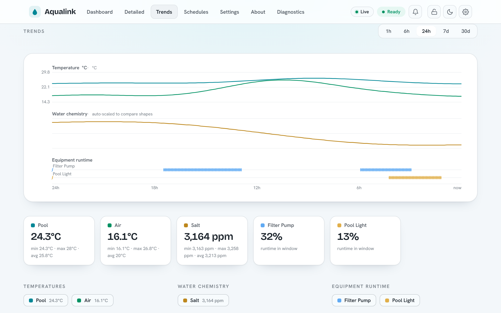
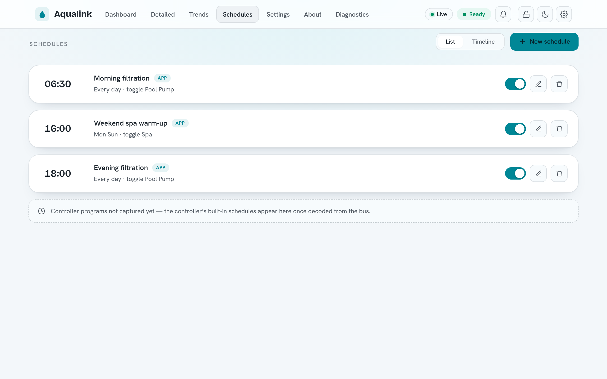
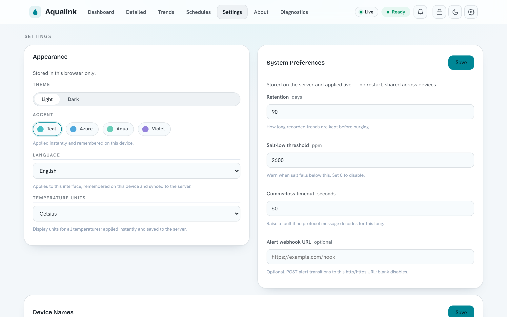
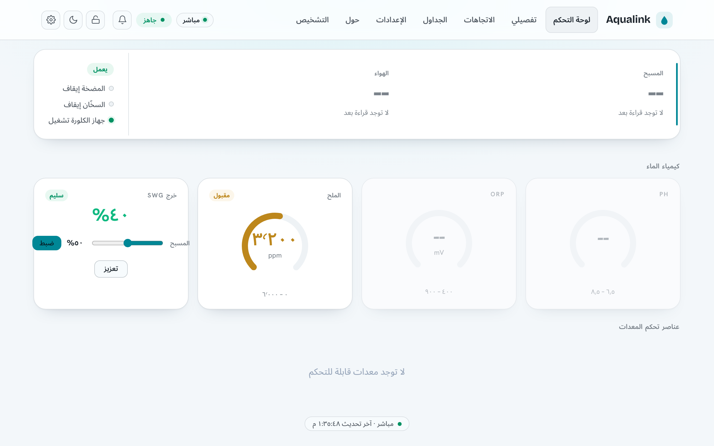

Usage, HTTP API and WebSocket protocol¶
For pool owners running a release build who want to control or monitor the system over HTTP. The machine-readable companion is swagger.yaml; CLI flags live in the Configuration reference; building from source lives in INSTALL.md.
This document covers how to run the application, the built-in web UI, the complete HTTP REST API, and the WebSocket protocol the UI uses for live updates. Routes are documented as the code registers them today — the same source of truth swagger.yaml is generated against.
Contents¶
- Quickstart: first run
- The web UI
- Security model
- HTTP API conventions
- Route reference by tag
- Key request and response examples
- WebSocket protocol
- Prometheus metrics
- Viewing the API spec
Quickstart: first run¶
The application talks to the AquaLink panel over RS-485 — either a local serial port or a remote serial bridge — and serves a web UI plus REST/WebSocket API. Pick the connection that matches your hardware.
Connect to a local serial port. Use this when the RS-485 adapter is plugged into the machine running the app.
# Linux: an FTDI/CH340-style USB RS-485 adapter shows up as /dev/ttyUSB0
aqualink-automate --serial-port /dev/ttyUSB0
Connect to a remote serial bridge. Use this when the panel is wired to a networked RS-485-over-TCP device (for example a Brainboxes or other RFC 2217 gateway). Pass --rfc2217 when the bridge speaks the RFC 2217 control protocol.
Open the web UI. The web server binds to 127.0.0.1 by default — reachable only from the same machine. To reach it from your LAN, bind a routable address and choose a port:
aqualink-automate --serial-port /dev/ttyUSB0 --address 0.0.0.0 --http-port 8080
# Then browse to http://<host-ip>:8080/
Security: The bind address defaults to 127.0.0.1 and authentication is off by default. Binding to 0.0.0.0 exposes an unauthenticated control surface to your whole network. Turn on a bearer token (see Security model) before exposing the server, and prefer HTTPS. See the Configuration reference for --address, --http-port, and TLS options.
CLI flags and the optional config file share names: a config-file key is the option's long name without the leading dashes (for example the flag --http-port is the key http-port).
The web UI¶
The UI is a static single-page application built on Alpine.js. The server ships it from the document root (override with --doc-root), and your browser drives everything from there — there is no server-side rendering.
On load the page:
- Loads the vendored
alpine.min.jsand Chart.js (vendored aschart.umd.min.js) — no external CDN. - Calls
auth.check(), which issuesGET /api/auth/check. A200means you are allowed in (either auth is disabled or your stored token is valid); a401shows the login screen. - Runs
fetchInitial(a batch of REST reads) to paint the current state, then opens the live WebSocket connections. - Falls back to polling REST every 30 seconds whenever the WebSocket is down, so the UI keeps updating even if the live channel drops.
The WebSocket client opens /ws/equipment and /ws/equipment/stats, matching the page protocol (ws:// for HTTP, wss:// for HTTPS). It reconnects with exponential backoff from 1 s up to 30 s. When a token is stored it is attached as the ['aqualink', 'bearer.<token>'] WebSocket subprotocols.
Beyond the main dashboard (pictured in the README), the UI includes a Trends view over the recorded history (--history-db), a Schedules view for the app scheduler (--schedules-file), and a Settings view combining per-browser appearance options with server-side system preferences:



Languages¶
The web UI ships in nine languages — English, German, Spanish, French, Arabic, Hebrew, Japanese, Simplified Chinese, and Yiddish — selected under Settings → Appearance → Language (the available languages are also listed on the About page). By default the UI follows the browser's language; an explicit choice is stored locally for instant boot and mirrored to the server under preferences.ui.locale, so it follows you across devices.
Right-to-left languages (Arabic, Hebrew, Yiddish) mirror the layout automatically, and numbers, dates, and temperatures format per the active locale — Arabic renders Eastern Arabic-Indic digits, and temperatures follow the °C/°F display-units preference everywhere, including the Trends charts.

Translations live in plain-text catalogs and are easy to contribute — see Contributing translations for the workflow and docs/i18n.md for the mechanics.
Responsive layout¶
The UI is a single responsive web app — there is no separate mobile build or native app. The same page reflows across three viewport bands, and the navigation adapts to match:
| Width | Band | Navigation |
|---|---|---|
< 640px |
Phone | A fixed bottom tab bar (Dashboard · Trends · Schedules · More); secondary destinations live behind More, which opens a bottom sheet — a grouped menu with per-row icons, drill-in chevrons, and toggle switches for dark mode and monitor-only mode. |
640–1023px |
Tablet | The inline links collapse behind a hamburger button that opens a nav drawer. |
≥ 1024px |
Desktop | The full inline navigation in the top bar. |
On phones the dashboard reorders and consolidates itself around what you act on most: a condensed Pool/Spa/Air temperature header; equipment as two-up tap-tiles (tap to toggle; a tile fills with the accent colour when its device is on); the heater rows with the temperature-setpoint steppers folded in beneath them; and the water chemistry collapsed into a single card — pH, ORP and salt as an accent-striped row with the salt-water generator output and controls below. The top bar condenses to one row (brand, live/ready status, alerts), with the theme and other toggles moving into the More sheet. Tablet portrait keeps the richer multi-column card grid — circular chemistry dials, a standalone setpoints card — under the hamburger; tablet landscape and desktop use the full inline layout. Modals become full-width bottom sheets on phones and centred dialogs on wider screens. On compact layouts the dense Diagnostics page also collapses to the essentials (System Health, serial-port utilisation, bandwidth, message errors, communication latency); the heavier power-user sections — device list, message statistics, MQTT broker, log levels and serial recording — fold behind a Show advanced diagnostics disclosure, while desktop keeps the full page.


The layout is regression-tested at every band by e2e/responsive.spec.ts, which asserts the correct navigation pattern, no horizontal overflow, RTL mirroring, and dark-mode heading contrast across the phone/tablet/desktop viewports.
Security model¶
Authentication is opt-in and off by default. With no token configured the server behaves exactly as an open, unauthenticated service — every route is reachable without credentials.
To require authentication, set a bearer token via --api-auth-token <token> (config key api-auth-token). When a token is configured:
- Registered routes (everything under
/api, plus/metrics) and any unmatched/api/*path require anAuthorization: Bearer <token>header. The token is compared in constant time. A missing or wrong token returns401 Unauthorized. An unknown/api/*path answers401(not404) so the existence of routes is not leaked. - Static assets are intentionally served without authentication. This is deliberate: the browser must be able to load
index.html, scripts, and CSS to render the login screen before the user has a token. GET /api/healthis intentionally served without authentication. The liveness probe must be reachable by a container/orchestrator health check without baking in the operator's token. It returns only{"status":"ok","uptime_seconds":N}— no sensitive data. The richerGET /api/health/detailedis not exempt: it exposes internal subsystem state and is gated by the bearer-token policy like every other route.- WebSocket upgrades are gated by the same policy. Browsers cannot set an
Authorizationheader on a WebSocket upgrade, so the token rides in theSec-WebSocket-Protocolheader as abearer.<token>entry alongside theaqualinkmarker (for exampleSec-WebSocket-Protocol: aqualink, bearer.<token>). On success the handshake echoes back theaqualinksubprotocol.
Two further hardening layers are built into the routing layer and are exposed via CLI flags / config keys (see the Configuration reference):
- Origin allow-list. Set one or more allowed origins with the repeatable
--api-allowed-originflag (config keyapi-allowed-origin). When at least one origin is configured, a request or WebSocket upgrade whoseOriginheader is not on the list is rejected with403 Forbidden. - CSRF header. Enable
--api-require-csrf-header(config keyapi-require-csrf-header) so that state-changing methods (POST,PUT,DELETE, …) must send anX-Requested-Withheader or they are rejected with403 Forbidden. This check does not apply to the WebSocket upgrade, which is always aGET.
Security: A token over plain HTTP travels in cleartext. Pair --api-auth-token with HTTPS (see the TLS options in the Configuration reference) whenever the server is reachable beyond localhost.
Identity system (--auth-mode)¶
Beyond the shared token, an opt-in identity system is available (design: auth-redesign.md; enforcement model: SECURITY.md). With --auth-mode enabled, every request resolves to a subject, and each route declares the entitlement action it requires — drawn from the v1 vocabulary in auth-redesign.md §4 (equipment.view, the equipment.control.* family, schedules.view/schedules.edit, diagnostics.view, prefs.self, system.admin) — which a default-deny policy engine checks on every request; routes with per-resource grain (e.g. POST /api/equipment/buttons/{button_id}) are checked against the specific resource id in the path, so selector-scoped grants like equipment.control.aux:AUX3 are enforced by the router. A denied request answers 401 when the subject is anonymous and 403 when it is authenticated but not entitled; an unknown /api/* path still answers 401 for an unauthenticated subject (no route enumeration). When --auth-mode enabled, the legacy --api-auth-token shared-token check is superseded — bearer credentials are interpreted by the subject resolver instead. The login and administration flows are fully implemented: username/password sessions with refresh rotation (Sessions), guest browsing and kiosk PIN elevation (Guest mode), and user/group/entitlement/API-key management (Administration). Anonymous callers carry the built-in Guest group's entitlements — empty by default, deny until granted.
HTTP API conventions¶
- Base paths. Application routes live under
/api. Two endpoints are exceptions:GET /metricslives at the root (not under/api), and the web UI / static assets are served from/. - No caching of dynamic responses. Every registered (dynamic) route response is stamped
Cache-Control: no-store. Static assets are not, so they cache normally. - Request body limit. HTTP request bodies are capped at 10000 bytes. A larger body is rejected before your handler runs.
- Connection limits. The server accepts at most 1000 concurrent HTTP connections and applies a 30-second per-operation idle timeout.
- Method dispatch. Each route dispatches on the HTTP method. An unsupported method returns
405 Method Not Allowed. Some routes return a bare405; others (the diagnostics routes) return405with a JSON body such as{"error":"Method not allowed. Use GET."}. - Content types. JSON responses use
application/json. Validation and method errors are usuallytext/plainor a small JSON{"error":"..."}object, depending on the route (noted per route below).
Note: In replay/dev mode the system has no live serial adapter, so command (POST) routes commonly answer 503 while PoolConfiguration is Unknown. This is a documented, accepted outcome — treat it as "not ready", not a server fault.
Route reference by tag¶
All routes below are registered in a single block when the web server is enabled. URLs are compile-time constants.
Health¶
| Method | Path | Success | Notes |
|---|---|---|---|
| GET | /api/health |
200 {"status":"ok","uptime_seconds":N} |
Liveness probe for Docker/Kubernetes health checks. Always unauthenticated (reachable without the bearer token even when --api-auth-token is set); carries no sensitive data. The Docker image ships a HEALTHCHECK that polls it. |
| GET | /api/health/detailed |
200 JSON / 503 when not ready |
Readiness + diagnostics: overall readiness, uptime, version, and per-subsystem checks (configuration + equipment validation, equipment count, MQTT connectivity). Returns 200 once the pool configuration is known, 503 while still starting. Subject to the bearer-token policy (it exposes internal state). Serial/protocol counters are not duplicated here — see /metrics. |
Version¶
| Method | Path | Success | Notes |
|---|---|---|---|
| GET | /api/version |
200 JSON |
App + build metadata and uptime. git_info.uncommitted_changes is the build-time working-tree state and means a tracked source file differed from the commit — it deliberately ignores exec-bit-only changes, untracked build artifacts, and the bootstrapped deps/vcpkg submodule, so a CI-released binary reports false. |
Equipment¶
| Method | Path | Success | Other codes |
|---|---|---|---|
| GET | /api/equipment |
200 JSON |
Full state block (temperatures, chemistry, configuration, devices, stats, version). |
| GET | /api/equipment/devices |
200 JSON |
Devices grouped as auxillaries, heaters, pumps. |
| GET | /api/equipment/version |
200 JSON |
fields[], model_number, fw_revision. |
| POST | /api/equipment/circulation |
200 JSON |
Set circulation mode (pool/spa/spillover). 400 (bad value), 503 (no dispatcher). POST-only; non-POST returns a bare 405. |
| POST | /api/equipment/heater |
200 JSON |
Enable/disable a heater by body of water (pool/spa/solar). 400 (bad value), 503 (no dispatcher). POST-only; non-POST returns a bare 405. |
Buttons¶
| Method | Path | Success | Other codes |
|---|---|---|---|
| GET | /api/equipment/buttons |
200 JSON |
List of buttons with controllable flag. |
| POST | /api/equipment/buttons |
200 empty text/html |
Placeholder (no-op). |
| GET | /api/equipment/buttons/{button_id} |
200 JSON |
503 (system not ready), 404 (bad/unknown id). |
| POST | /api/equipment/buttons/{button_id} |
200 JSON (toggled) |
503, 404, 422, 400 (see below). |
Devices¶
| Method | Path | Success | Notes |
|---|---|---|---|
| GET | /api/equipment/iaq |
— | POST only (see Setpoints/commands). |
| POST | /api/equipment/iaq |
200 JSON |
select_button (0..255). 503 no dispatcher, 400 bad value. |
| GET | /api/equipment/spaside-remotes |
200 JSON |
remotes, assignments, requested. |
| POST | /api/equipment/spaside-remotes |
200 JSON |
press / assign actions (see below). |
Setpoints¶
| Method | Path | Success | Other codes |
|---|---|---|---|
| GET | /api/equipment/setpoints |
200 JSON |
pool_setpoint, spa_setpoint. |
| POST | /api/equipment/setpoints |
200 JSON |
400 (bad value), 503 (no dispatcher), 500 (dispatch failed). |
| POST | /api/equipment/chlorinator |
200 JSON |
400 (bad body), 503 (no dispatcher). |
Diagnostics¶
| Method | Path | Success | Notes |
|---|---|---|---|
| GET | /api/diagnostics/emulated-devices |
200 JSON |
Per-device diagnostics array (emulated). |
| GET | /api/diagnostics/actual-devices |
200 JSON |
Per-device diagnostics array (bus-discovered). |
| GET / POST | /api/diagnostics/logging |
200 JSON |
GET returns channels + levels; POST sets a level. |
| GET | /api/diagnostics/options |
200 JSON |
options[] of {name, short_name, description}. |
| GET | /api/diagnostics/mqtt |
200 JSON |
enabled + MQTT connection diagnostics. |
| GET | /api/diagnostics/matter |
200 JSON |
enabled + Matter sidecar status (cached). |
| GET / POST | /api/diagnostics/recording |
200 JSON |
GET returns {recording, file, bytes}; POST starts/stops. |
| GET / POST | /api/diagnostics/profiling |
200 JSON |
GET reports {enabled, running, backend, available}; POST controls it (start/stop/select). 400 (bad body), 409 (no backend in this build), 503 (no controller). |
Non-GET requests to the read-only diagnostics routes return 405 with a JSON body.
History¶
| Method | Path | Success | Other codes |
|---|---|---|---|
| GET | /api/history/series |
200 JSON |
503 when history is disabled; 404 unknown key; 400 if to < from. |
Schedules¶
| Method | Path | Success | Other codes |
|---|---|---|---|
| GET | /api/schedules |
200 array |
503 when scheduler disabled. |
| POST | /api/schedules |
201 JSON |
400 invalid body; 503 disabled. |
| GET | /api/schedules/{uuid} |
200 JSON |
404 unknown; 503; 400 missing uuid. |
| PUT | /api/schedules/{uuid} |
200 JSON |
400, 404, 503. |
| DELETE | /api/schedules/{uuid} |
204 |
404, 503. |
| POST | /api/schedules/{uuid}/promote |
200 {status:"queued", schedule} |
404 unknown; 422 no on/off complement or non-button action; 400 not representable (blockers[]); 503. |
| GET | /api/controller/schedules |
200 {status, active_group, schedules[]} |
503 when the store is unavailable. |
| POST | /api/controller/schedules |
200 {status:"queued", schedule} |
400 bad body / not representable (with blockers[]); 503 no writer. |
| PUT | /api/controller/schedules/{id} |
200 {status:"queued", schedule} |
404 unknown id; 400 bad body / not representable (with blockers[]); 503 no writer. |
| DELETE | /api/controller/schedules/{id} |
200 {status:"queued"} |
404 unknown id; 503 no writer. |
App-side schedules (/api/schedules) are point actions the app fires; controller
schedules (/api/controller/schedules) are the controller's own built-in
on→off programs, reported as spans. status is available,
pending_capture (parser not yet wired), or unsupported. The controller keeps
two program groups (A/B) with only one active; active_group names it and each
entry carries its group. Only the active group's schedules are observable on
the wire. Writing a controller program (POST create / DELETE) drives a capable
panel's Program menu over RS-485 and is asynchronous — a 200 means the write
was queued, so poll GET to observe the result. Only a controller-representable
span is accepted; an infeasible one is rejected 400 with stable blockers codes
(the same Scheduling::CheckControllerCandidate predicate used for promotion). The
web UI merges both sources into one timeline. See
schedules-design.md for the two-tier model and
iaq_schedule_protocol.md for the wire decode.
Preferences¶
| Method | Path | Success | Other codes |
|---|---|---|---|
| GET | /api/preferences |
200 JSON |
503 when the service is unavailable. |
| PUT | /api/preferences |
200 JSON |
400 (invalid JSON or apply failure), 503. The opaque ui object merges shallowly at its top level (a ui.* value of null deletes that key) so independent UI features never clobber each other's keys. |
Metrics¶
| Method | Path | Success | Notes |
|---|---|---|---|
| GET | /metrics |
200 text/plain |
Prometheus exposition. Lives at the root, not under /api. |
Authentication¶
| Method | Path | Success | Notes |
|---|---|---|---|
| GET | /api/auth/check |
200 {"authenticated":true} |
Only reached when already authorized or auth is disabled; the routing layer answers 401 upstream otherwise. |
| GET | /api/auth/me |
200 JSON |
The resolved subject for the calling request: posture ("disabled"/"enabled"), id, username (human-readable name — the local account's username or an API key's label; empty when the provider has no natural name, fall back to id), authenticated, provider, groups[], entitlements[] — the SPA's single source of truth for gating affordances (enforcement stays server-side). Declares no entitlement requirement, so with --auth-mode enabled an anonymous/guest caller can always probe its own scope. With auth-mode disabled the subject is root-anonymous and entitlements is empty (everything is permitted by posture, so nothing is enumerated). |
Sessions (Slice 2)¶
These routes exist only when --auth-mode enabled. They are the local-account login flow; all four declare no entitlement requirement (they are how a subject acquires or drops a credential), so the router gate is open — enforcement is by the credential in the body.
| Method | Path | Entitlement | Behaviour |
|---|---|---|---|
| POST | /api/auth/login |
open | Verify {username, password}; on success return {access_token, refresh_token, session_id, token_type:"Bearer"}. 401 on bad credentials; 429 (Retry-After: 900) when the account is locked out after repeated failures. Argon2id runs off the kernel thread. |
| POST | /api/auth/refresh |
open | Exchange {refresh_token} for a fresh {access_token, refresh_token} pair (single-use rotation). 401 when invalid/expired, or when a rotated-out token is replayed (the session is then revoked). |
| POST | /api/auth/logout |
open (everywhere needs auth) |
Revoke the session for {refresh_token}; always answers 204 (never discloses whether the token was live). With {"everywhere":true} it revokes every session for the caller and bumps tokver — this variant requires an authenticated subject (401 otherwise). |
| POST | /api/auth/setup |
open | First-run only: create the first administrator from {username, password} when the user store is empty. 201 on success; 403 once setup has already been completed (self-sealing); 400 on a weak password (min 12) or missing fields. |
| POST | /api/auth/pin |
open | Kiosk PIN elevation (guest mode): verify {pin} and, on success, return a {access_token, refresh_token, session_id, token_type:"Bearer"} session in the admin-configured target group. 401 on a wrong/disabled PIN (one indistinguishable error); 429 (Retry-After: 900) when the PIN endpoint is locked out. Argon2id runs off the kernel thread. |
Guest mode¶
/api/auth/me additionally reports kiosk_enabled so the login screen can offer PIN entry. Guest browsing is governed entirely by the built-in Guest group's entitlements (edit it via POST /api/groups): grant it equipment.view to let anonymous visitors reach the dashboard (login-to-elevate stays available); leave it empty for a login wall. Kiosk PIN elevation is configured here:
| Method | Path | Entitlement | Behaviour |
|---|---|---|---|
| GET | /api/kiosk |
system.admin |
Report {enabled, target_group}. The PIN and its hash are write-only and never returned. |
| PUT | /api/kiosk |
system.admin |
Set/replace the PIN from {pin, target_group} (argon2id off-thread). Bumps a kiosk tokver (invalidating prior kiosk sessions) and revokes their refresh tokens. 400 on a short PIN (min 4) or an unknown target group. 204 on success. |
| DELETE | /api/kiosk |
system.admin |
Disable kiosk PIN elevation, clear the PIN, and revoke all live kiosk sessions. 204. |
Kiosk sessions are ordinary JWT sessions (provider = KioskPin) — revocable and listed in /api/sessions under the kiosk subject id — but carry no prefs.self (a shared terminal has no per-user preferences). The subject resolver validates them against the kiosk store's enabled flag + tokver rather than the user store, so disabling the kiosk (or replacing the PIN) drops outstanding kiosk sessions straight back to the Guest scope.
Administration¶
These routes exist only when --auth-mode enabled. Most require the system.admin entitlement; the self-service exceptions (own password, own sessions) are gated on prefs.self — i.e. simply being authenticated — with the admin-vs-self distinction enforced in-handler. A denied request answers 401 when anonymous and 403 when authenticated-but-unentitled.
| Method | Path | Entitlement | Behaviour |
|---|---|---|---|
| GET | /api/users |
system.admin |
List local accounts (id, username, groups, direct entitlements, disabled, tokver; never the password hash). |
| POST | /api/users |
system.admin |
Create an account from {username, password, groups?, direct_entitlements?}. 400 weak password / unknown entitlements; 409 duplicate username. |
| GET | /api/users/{user_id} |
system.admin |
Fetch one account record. 404 unknown. |
| PUT | /api/users/{user_id} |
system.admin |
Partial update of username/groups/direct_entitlements/disabled. A grant change bumps tokver; disabled:true also revokes every session. 409 on duplicate username or last-admin protection. |
| DELETE | /api/users/{user_id} |
system.admin |
Delete the account, revoke its sessions, forget its per-user prefs (audit retained). 409 for the last enabled admin. |
| PUT | /api/users/{user_id}/password |
prefs.self |
Set a password. An admin may set anyone's; any other subject only their own (403 otherwise). On success bumps tokver and revokes every session. 400 if under 12 chars. |
| GET | /api/groups |
system.admin |
List groups (name, entitlements, built_in). |
| POST | /api/groups |
system.admin |
Upsert a group by name from {name, entitlements}. A change bumps every member's tokver. 400 on unknown/malformed entitlements. |
| DELETE | /api/groups/{group_name} |
system.admin |
Delete a non-built-in group (members' tokver bumped). 404 unknown; 409 built-in. |
| GET | /api/entitlements |
system.admin |
List the known entitlement-action vocabulary ({"actions":[...]}) so the UI can enumerate what is assignable. |
| GET | /api/apikeys |
system.admin |
List API-key metadata (id, label, entitlements, expiry, last-used, revoked); never the secret. |
| POST | /api/apikeys |
system.admin |
Create an entitlement-scoped key from {label, entitlements, expiry_unix?}. The 201 body carries the shown-once secret (aak_...) plus a warning. 400 missing label / bad entitlements. |
| DELETE | /api/apikeys/{key_id} |
system.admin |
Revoke a key (stays listed as revoked). 404 unknown. |
| GET | /api/sessions |
prefs.self |
List active refresh-token sessions. An admin sees every session; any other subject only their own. |
| DELETE | /api/sessions/{session_id} |
prefs.self |
Revoke one session ("log out that browser"). An admin may revoke any; any other subject only their own — a non-owned id answers 404 (indistinguishable from unknown, so ids are not enumerable). |
Preferences are per-user. When the identity system is on and the caller is authenticated, GET/PUT /api/preferences becomes subject-aware. The per-user fields — temperature_units, theme, accent, and chemistry_bands — are stored per account and synced server-side; a GET returns the live global defaults with the caller's overrides layered on top. Every other field is a system/admin preference (alert thresholds, history retention, label overrides, spa-switch mapping, …) and a PUT touching one requires system.admin (403 otherwise). An anonymous caller (or auth-mode disabled) reaches none of the per-user machinery — the whole document is global, and the SPA keeps an anonymous visitor's units/theme/accent choices in localStorage.
Key request and response examples¶
GET /api/equipment¶
Returns the full equipment state. The top-level keys are temperatures, chemistry, configuration, devices, stats, and version. The shape below shows the documented fields.
{
"temperatures": {
"pool": { "celsius": 28, "fahrenheit": 82, "last_updated": 1782600000, "stale": false },
"spa": null,
"air": { "celsius": 24, "fahrenheit": 75, "last_updated": 1782600000, "stale": false },
"pool_setpoint": { "celsius": 28, "fahrenheit": 82 },
"spa_setpoint": { "celsius": 38, "fahrenheit": 100 },
"staleness_threshold_seconds": 600
},
"chemistry": {
"salt_ppm": 3200,
"orp_mv": null,
"ph": null,
"chlorinator": {
"generating_percent": 50,
"duty_cycle": 50,
"status": "Generating",
"health": "Ok"
}
},
"configuration": {
"pool_configuration": "PoolOnly",
"configuration_source": "DataHub",
"expected_auxillary_count": 6,
"expected_power_center_count": 1,
"validation": {
"passed": true,
"expected_auxillaries": 6,
"discovered_auxillaries": 6,
"expected_power_centers": 1,
"discovered_power_centers": 1,
"anomalies": []
},
"bodies": [
{ "id": "Pool", "label": "Pool", "is_active": true,
"temperature": { "celsius": 28, "fahrenheit": 82 },
"setpoint": { "celsius": 28, "fahrenheit": 82 } }
]
},
"devices": { },
"stats": { },
"version": { }
}
Field notes (these are deliberate, not bugs):
salt_ppmis a rawuint16. A value of0is emitted as-is, not nulled.orp_mvisnullwhen the reported value is exactly0(no sensor on the wire).phisnullwhen the reported value is exactly0.0.chlorinatorisnullwhen no chlorinator (SWG) has been discovered; otherwise it carriesgenerating_percent,duty_cycle,status, andhealth.validationis an object once the startup scrape completes, ornullbefore then. The spellingexpected_auxillary_count(and the nestedexpected_auxillaries/discovered_auxillaries) is the exact field name in the payload.- A temperature is either a
{ "celsius": ..., "fahrenheit": ... }object ornull.
GET /api/equipment/buttons¶
{
"buttons": [
{
"id": "1f3c...uuid",
"label": "Filter Pump",
"display_label": "Filter Pump",
"status": "On",
"device_type": "FilterPump",
"controllable": true
}
]
}
controllable is false for Chlorinator and Unknown device types (they are configurable/informational, not on/off toggles).
POST /api/equipment/buttons/{button_id} (toggle)¶
Toggle a single controllable device by its UUID.
Status mapping (from the command dispatcher result):
| Outcome | Status |
|---|---|
| Toggled successfully | 200 (body above) |
| No serial adapter / not ready / null dispatcher | 503 (with Retry-After) |
| Device id not found | 404 |
| Device type cannot be mapped to a command | 422 |
| Invalid value for the command | 400 |
PoolConfiguration == Unknown (system still starting) yields 503 for both GET and POST. A missing, unparseable, or unknown button_id yields 404.
POST /api/equipment/setpoints¶
Set pool and/or spa water-temperature setpoints. Values are in Celsius. Each field is validated to be finite and within -10.0 .. 50.0; an out-of-range value returns 400 (text/plain). Either field may be omitted.
curl -X POST http://127.0.0.1:8080/api/equipment/setpoints \
-H 'Content-Type: application/json' \
-d '{ "pool": 28.0, "spa": 38.0 }'
{
"pool": { "status": "success", "celsius": 28.0 },
"spa": { "status": "success", "celsius": 38.0 }
}
With no command dispatcher available the whole request returns 503 (text/plain "Command dispatcher not available"). If any accepted field's dispatch fails, the overall status is 500 while the per-field JSON still reports each field's individual status.
POST /api/equipment/chlorinator¶
Set the chlorinator generating percentage and/or its boost mode.
curl -X POST http://127.0.0.1:8080/api/equipment/chlorinator \
-H 'Content-Type: application/json' \
-d '{ "percentage": 60, "boost": false }'
percentageis a number in0 .. 100.boostis a boolean.
{
"percentage": { "status": "success", "value": 60 },
"boost": { "status": "success", "value": false }
}
Note: There are two distinct 503 shapes here. A missing dispatcher returns text/plain "Command dispatcher not available". A command that ran but failed returns the per-field JSON body with the mapped status code.
POST /api/equipment/circulation¶
Set the circulation mode (which body of water the system circulates).
curl -X POST http://127.0.0.1:8080/api/equipment/circulation \
-H 'Content-Type: application/json' \
-d '{ "mode": "spa" }'
mode is a string and must be one of pool, spa, or spillover.
POST-only: any non-POST method returns a bare 405. A missing/non-string mode, or a value outside the allowed set, returns 400 (text/plain). With no command dispatcher available the request returns 503 (text/plain "Command dispatcher not available"). The HTTP status otherwise follows the command-dispatch result (400 invalid value, 503 no serial adapter / device not found, 422 unknown equipment type, 500 otherwise).
POST /api/equipment/heater¶
Enable or disable a heater, identified by its body of water. solar is modelled as the shared heater.
curl -X POST http://127.0.0.1:8080/api/equipment/heater \
-H 'Content-Type: application/json' \
-d '{ "body": "spa", "enable": true }'
bodyis a string and must be one ofpool,spa, orsolar.enableis a boolean.
POST-only: any non-POST method returns a bare 405. A missing/non-string body (or a value outside the allowed set) or a missing/non-boolean enable returns 400 (text/plain). With no command dispatcher available the request returns 503 (text/plain "Command dispatcher not available"). The HTTP status otherwise follows the command-dispatch result (as for circulation, above).
POST /api/equipment/iaq¶
curl -X POST http://127.0.0.1:8080/api/equipment/iaq \
-H 'Content-Type: application/json' \
-d '{ "select_button": 3 }'
select_button is an integer in 0 .. 255. Response: 200 {"select_button":{"status":"success","value":3}}. A missing dispatcher returns 503; a bad value returns 400.
POST /api/equipment/spaside-remotes¶
Two actions are supported. press actuates an emulated remote:
curl -X POST http://127.0.0.1:8080/api/equipment/spaside-remotes \
-H 'Content-Type: application/json' \
-d '{ "action": "press", "address": 32, "button": 1 }'
| Outcome | Status |
|---|---|
| Press queued | 200 |
| No remote at that address | 404 |
| Remote is real (observe-only, not emulated) | 409 |
| Button out of range | 400 |
assign programs a switch button to a function:
curl -X POST http://127.0.0.1:8080/api/equipment/spaside-remotes \
-H 'Content-Type: application/json' \
-d '{ "action": "assign", "switch": 1, "button": 2, "function": "Spa" }'
| Outcome | Status |
|---|---|
| Accepted | 200 |
| Invalid switch/button/function | 400 |
| Controller busy | 409 |
| No controller can program assignments | 503 |
Note: Two distinct 503 bodies exist. A null controller (dev/replay mode) returns {"error":"Spa-side remote control is not available in this mode"}. An assign with no capable controller returns {"error":"No controller can program spa-switch assignments on this system"}. A missing or unknown action returns 400.
GET /api/history/series¶
List all series, or query one. Returns 503 when history is disabled (no history database configured).
[
{ "key": "temp/pool", "unit": "C", "label": "", "first_ts": 1700000000, "last_ts": 1700090000, "count": 900 },
{ "key": "device/4b8c1e2a-7f3d-4a9b-bc10-2f5e6d7a8b90", "unit": "state", "label": "Pool Light", "first_ts": 1700000000, "last_ts": 1700090000, "count": 18 }
]
label is the friendly display name. Device series are keyed by the stable
button UUID (device/<uuid>) so a device that is renamed after discovery (e.g.
Aux5 → Pool Light) stays a single series; analog series use an empty label.
# Query a single series within a time window
curl 'http://127.0.0.1:8080/api/history/series?key=pool_temp&from=1700000000&to=1700090000&max_points=500'
{ "key": "pool_temp", "from": 1700000000, "to": 1700090000, "max_points": 500,
"points": [ { "ts": 1700000000, "value": 28.1 } ] }
Query parameters: key selects a series; an unknown key returns 404. from defaults to 0, to defaults to "now", and to < from returns 400. max_points defaults to 500, clamped to 1 .. 2000.
WebSocket protocol¶
There are two WebSocket endpoints:
| Endpoint | Purpose |
|---|---|
/ws/equipment |
Live equipment, chemistry, temperature, status, and alert updates. |
/ws/equipment/stats |
Live statistics updates. |
Neither handler processes inbound client messages — the channels are server-to-client only.
Frame envelope¶
Every frame is a JSON object with two fields:
type is the name of a WebSocket_EventTypes value: ChemistryUpdate, StatisticsUpdate, TemperatureUpdate, CirculationUpdate, SystemStatusChange, SystemStateUpdate, ButtonStateChange, AlertTransition, or Unknown.
What each endpoint sends¶
/ws/equipment broadcasts:
ChemistryUpdateTemperatureUpdateCirculationUpdate— circulation/heater mode changesButtonStateChangeSystemStatusChangeAlertTransition—{ "condition": ..., "state": "raised" | "cleared", "ts": ..., "detail": ..., "params": <object, optional> }—detailis the English description;paramscarries the structured values behind it (e.g.{"salt_ppm": 2400, "threshold_ppm": 2700}) for translated UI text / automations (docs/i18n.md). Conditions:chlorinator_fault,chlorinator_warning,salt_low,service_mode,serial_comms_loss, andtemperature_stale(pump running but the active body's water temperature has outlived--temperature-staleness-threshold; pump-off staleness is expected and never raises — the UI just ages the reading)
On connect, /ws/equipment enqueues exactly one SystemStateUpdate so a freshly connected client knows the current state immediately:
{
"type": "SystemStateUpdate",
"payload": {
"state": "ready",
"pool_configuration": "PoolOnly",
"equipment_mode": "Normal"
}
}
state is one of ready, starting, or service_mode.
/ws/equipment/stats sends StatisticsUpdate frames.
Per-type payload fields¶
These are the fields the UI consumes from each frame's payload:
| Event type | Payload fields |
|---|---|
TemperatureUpdate |
pool_temp, spa_temp, air_temp, pool_setpoint, spa_setpoint — each a raw dual-unit object {celsius, fahrenheit} (same shape as REST /api/equipment; display formatting is the frontend's job, see docs/i18n.md) |
ChemistryUpdate |
ph, orp, salt_level |
ButtonStateChange |
button_id, status, label (optional) |
SystemStateUpdate |
state, pool_configuration, equipment_mode |
SystemStatusChange |
status_type, source_name, source_type |
Connection limits¶
- Each connection has an outbound queue capped at 100 messages. When full, the oldest message is dropped (with a rate-limited warning) before the new one is enqueued.
- Inbound WebSocket frames are capped at 64 KiB.
- The same HTTP limits apply to the upgrade request: a 10000-byte body limit, at most 1000 concurrent connections, and a 30-second idle timeout.
Keepalive and reverse proxies¶
Both endpoints send a WebSocket protocol-level ping after roughly 30 seconds of silence (the server runs a 60-second idle timeout with keep-alive pings enabled — see WebSocketServerTimeout() in src/core/http/server/websocket_timeouts.h). This matters because /ws/equipment is change-driven: with the pool in a steady state no data frames flow for minutes, and without the pings a reverse proxy in front of the app would sever the quiet connection at its own idle timeout (nginx defaults proxy_read_timeout to 60 s; Cloudflare closes idle WebSockets after ~100 s), causing a spurious "Connection lost — retrying..." toast in the UI. Browsers answer pings automatically — clients do not need to implement anything.
If you run a reverse proxy in front of the application, any WebSocket/upstream idle timeout of 60 seconds or more works out of the box. A proxy configured tighter than ~30 seconds will still drop quiet connections. A peer that stops answering pings is torn down by the server within the 60-second idle timeout.
Prometheus metrics¶
GET /metrics returns Prometheus exposition text with content type text/plain; version=0.0.4; charset=utf-8. It is at the root, not under /api. A token-protected deployment requires the bearer token for /metrics too.
Series emitted:
| Metric | Type | Labels |
|---|---|---|
aqualink_build_info |
gauge (always 1) |
version, commit |
aqualink_serial_read_bytes_total |
counter | — |
aqualink_serial_write_bytes_total |
counter | — |
aqualink_messages_total |
counter | — |
aqualink_message_errors_total |
counter | kind (checksum, deserialization, invalid_packet_format, generator, overlapping_packets, buffer_overflow) |
aqualink_serial_errors_total |
counter | kind (overflow, underflow, transmission_failure) |
aqualink_latency_microseconds |
gauge | stage (serial_read, serial_write, msg_proc), quantile (0.01, 0.5, 0.95, 0.99) |
A minimal scrape config:
scrape_configs:
- job_name: aqualink-automate
static_configs:
- targets: ['127.0.0.1:8080']
# If a bearer token is configured:
# authorization:
# credentials: '<token>'
Viewing the API spec¶
The machine-readable OpenAPI spec is swagger.yaml. It is served as a static asset, not by a dedicated route handler, reachable at:
Because it is a static asset, it is served as raw YAML and (like all static assets) without authentication.
To browse it as interactive Swagger UI, use the Docker docs profile:
See INSTALL.md for the Swagger UI docs profile and other deployment details.
Related documentation¶
- Configuration reference —
--api-auth-token,--address,--http-port, and the TLS flags that control this server. - MQTT and Home Assistant — the MQTT control surface, an alternative to this HTTP API.
- swagger.yaml — the machine-readable companion to this reference.
- INSTALL.md — installation and the Swagger UI docs profile.